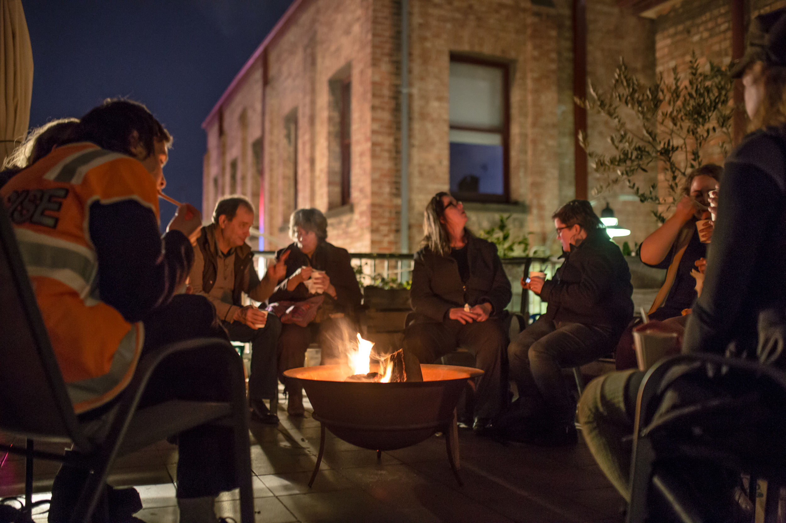
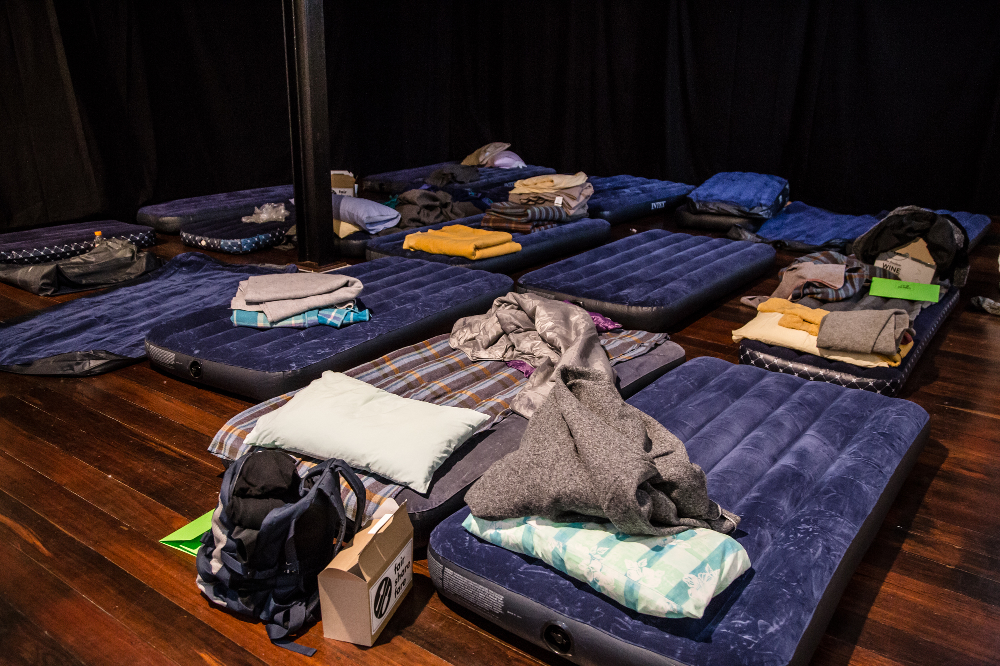
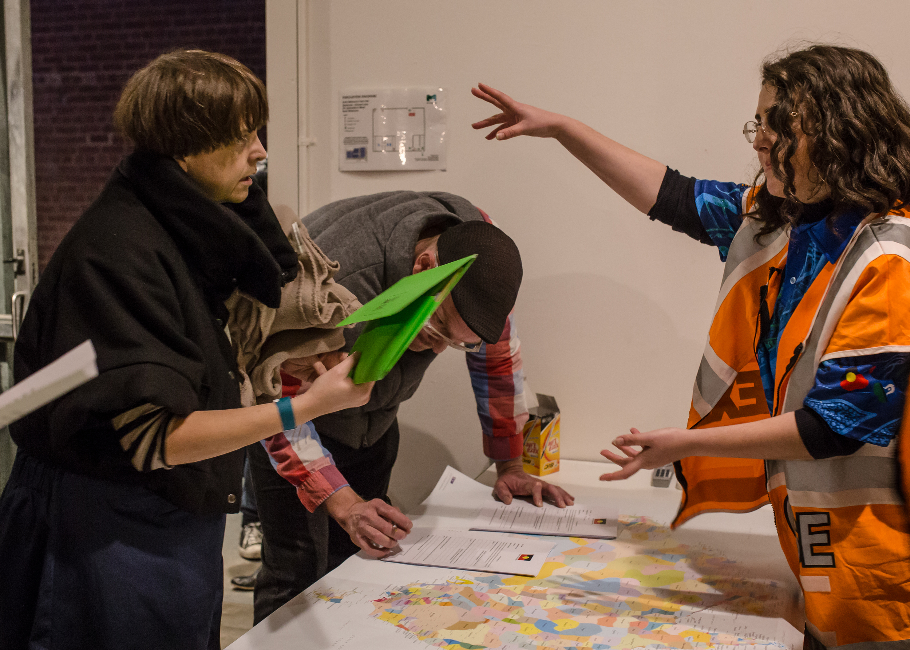
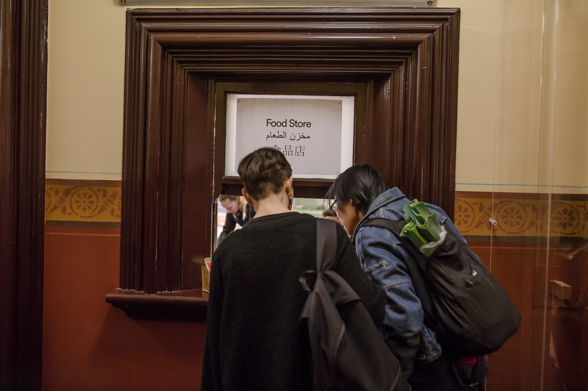
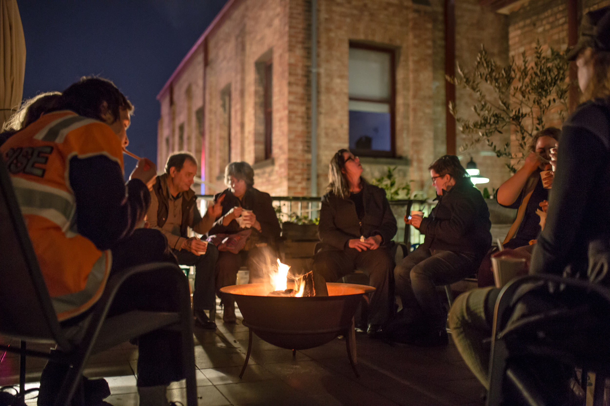
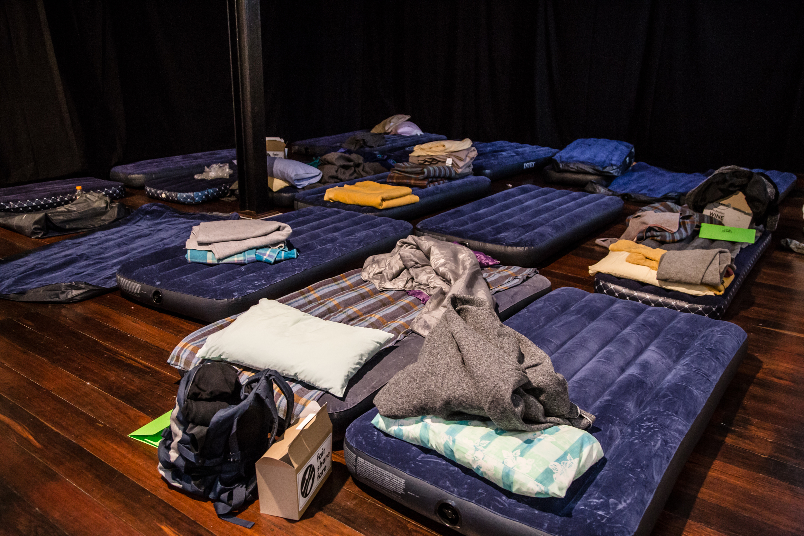
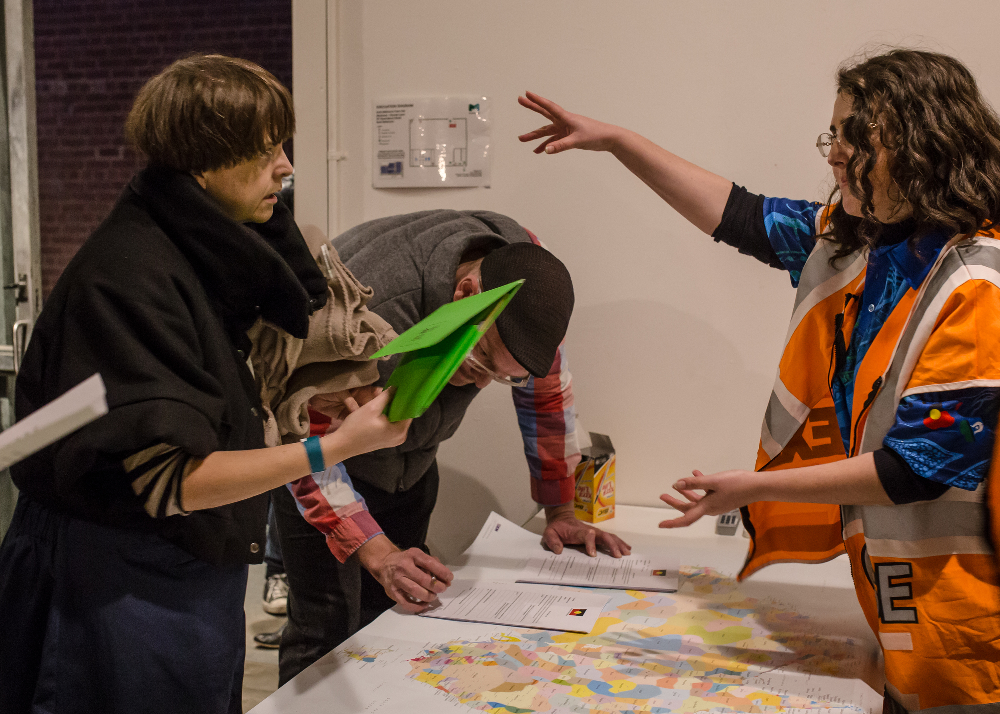
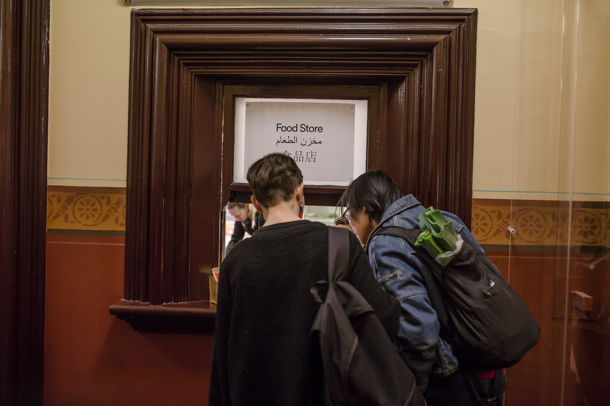
 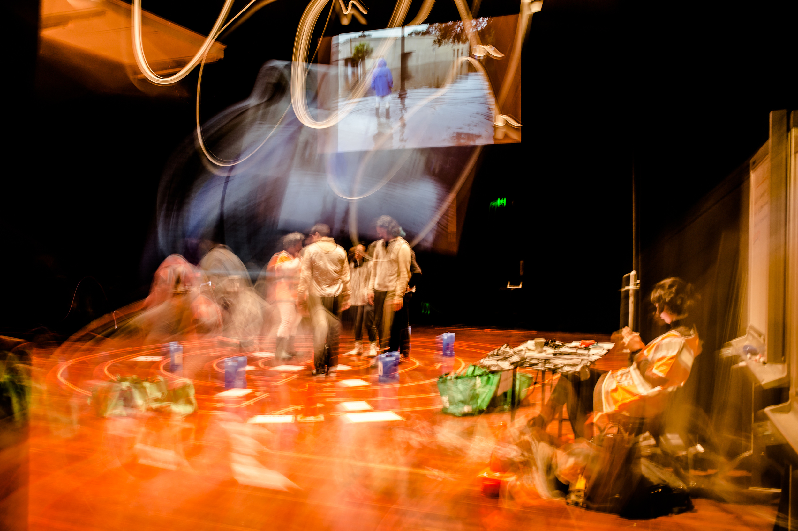
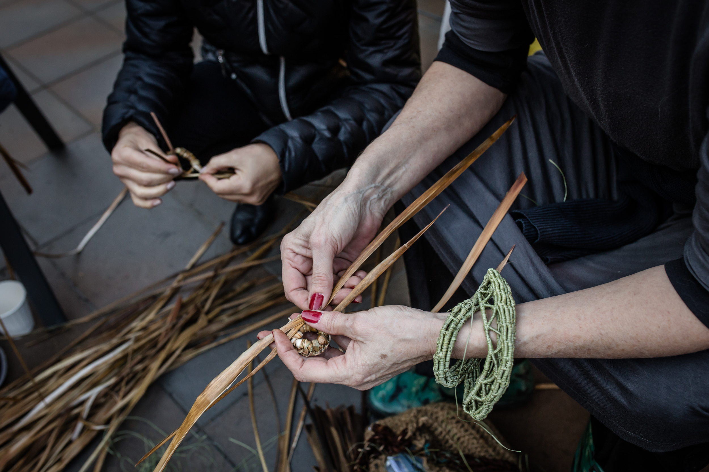
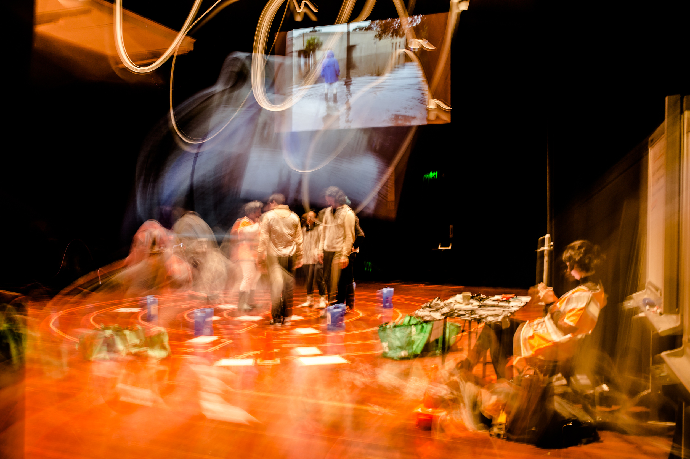
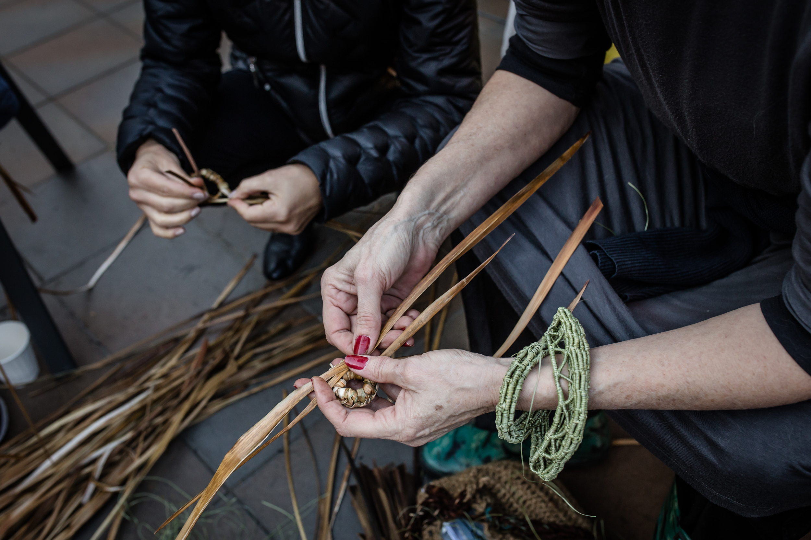
Refuge
Participatory Art Event, 9 July 2016, Arts House
How should cultural spaces respond to catastrophic emergencies? How can we ensure that we and our communities are prepared, and that we understand and fulfil our role as a local resource? What role should the arts, and artists, play in planning for such events? At a time when communities around the world are affected by unprecedented natural and human-induced disasters, and as we stare the long emergency of climate change in the face, a conversation around preparedness, resilience and recovery could not be more pertinent.
Refuge is an interdisciplinary initiative by Arts House that looks at the role of cultural spaces and the arts in preparing for climate related disasters by configuring the North Melbourne Town Hall as a Relief Centre and working with local community, emergency services, academics and led by artists from a range of disciplines.
The 2016 Refuge project was supported by a range of partners including University of Melbourne, Emergency Management Victoria, Red Cross Australia, The Huddle at the North Melbourne Football Club, The Creative Recovery Network, SEED Indigenous Youth Climate Network and Resilient Melbourne.
Photos by Bryony Jackson